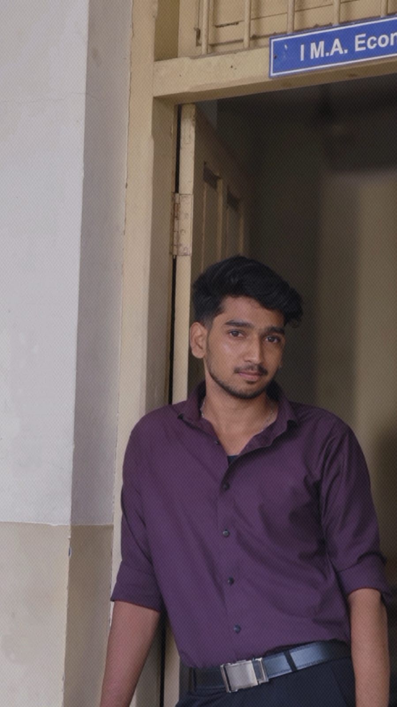

Viswa E
Web Designer & Aspiring UX Designer
Bridging the gap between complex development and intuitive user experiences. Focused on creating accessible, high-performance digital solutions.
Professional Profile
Final-year BCA student at St. Joseph's College (8.0 CGPA) with a focus on human-computer interaction. I apply a user-centered approach to every project, ensuring that usability and aesthetics work in harmony.
Design Philosophy
Clarity
Visual hierarchy that guides the user effortlessly.
Responsiveness
Seamless performance across all modern devices.
Accessibility
Inclusive design following WCAG standards.